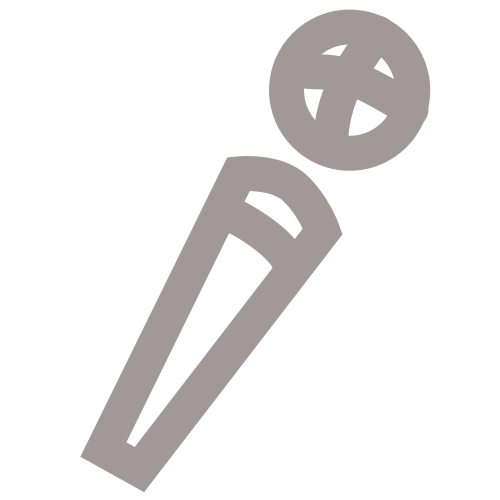

The Top 3 FREE Digital Art Programs in 2022
Blog Post
I review some of the most commonly used free 2D digital art programs by drawing something in each one.

Workshop Inventory System
Coding Project
Collaborated with a team of other students to develop an inventory management system from scratch for Virginia Tech's first year engineering lab.

COVID-19 Data Visualization
Coding Project
Collaborated with a team of other students to develop a system to visualize data (casualties and deaths) from COVID-19 in some states from the Southeast.
Your Friendly Neighborhood Corporate Twitter
Podcast
Join us as we take a brief dive into the world of corporate Twitter accounts and small, local social media teams. We hit on pressing issues like: how can we be more aware of when we're being sold to? How do we draw the line between large corporations and their imitators? And are Pop Tarts virgin shaming?
How to Animate a Blink in Krita in 1 Minute
Video
This short tutorial introduces you to Krita's animation workspace, and how to create a short, lazy animation in it.